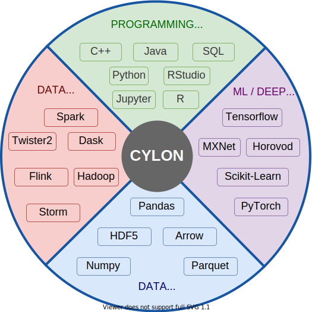

Cylon
Data Engineering Everywhere!
![[object Object]](/img/fast.png)
Fast & Scalable
Cylon uses OpenMPI underneath. It provides core data processing operators many times efficiently than current systems.
![[object Object]](/img/compatible.png)
Designed to be Integrated
Cylon is designed to work across different data processing frameworks, deep learning frameworks and data formats.
Powered by Apache Arrow
Cylon uses Apache Arrow underneath to represent data.
![[object Object]](/img/byol.png)
BYOL, Bring Your Own Language!
Write in the language you are already familiar with, yet experience the same native performance.
1
2
3
4
5
6
7
8
9
10
11
12
13
14
15
16
17
18
19
20
int main(int argc, char *argv[]) {
auto mpi_config = cylon::net::MPIConfig::Make();
auto ctx = CylonContext::InitDistributed(mpi_config);
std::shared_ptr<Table> table1, table2, joined;
auto read_options = CSVReadOptions().UseThreads(true);
Table::FromCSV(ctx, {
"/path/to/csv1.csv",
"/path/to/csv2.csv"
}, {table1, table2}, read_options);
auto join_config = JoinConfig::InnerJoin(0, 0);
cylon::DistributedJoin(table1, table2, join_config, joined);
joined->Print();
ctx->Finalize();
return 0;
}